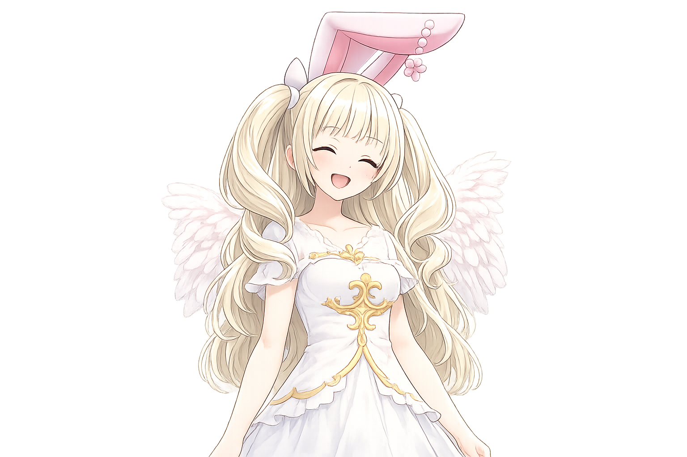
みゅあ🐾 マスモン(育成・染色)
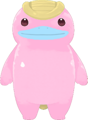
もちぷるモッチー ・ Lv.24すばやさ型3枠
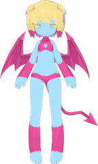
ぴくりんピクシー ・ Lv.16ガッツ型3枠
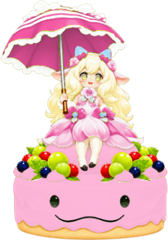
ほいっぷちゃんメルホイップ ・ Lv.14ライフ型5枠
💗好きモッチー
💦苦手ゴースト
軽いカードを早く並べて、
好きなカード: モッチー(MFバトルカードのカード) ・ よく入れるカード: ホリィの声援・飛び散る火花
 きき
きき🐾 マスモン(育成・染色)
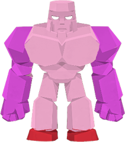
ごろべえゴーレム ・ Lv.26攻撃型3枠
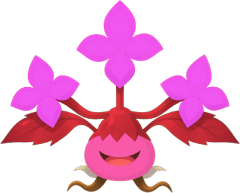
おちゃばプラント ・ Lv.15防御型3枠
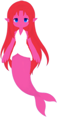
しずくウンディーネ ・ Lv.13ガッツ型3枠
💗好きゴーレム
💦苦手ハム
守って耐えて、
好きなカード: ゴーレム(MFバトルカードのカード) ・ よく入れるカード: 必殺技の応酬・長期戦の予感
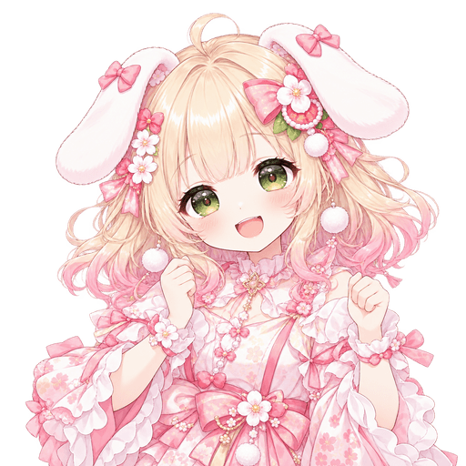
ももすけ🐾 マスモン(育成・染色)
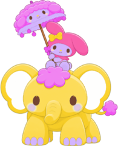
メロちゃんメロディー ・ Lv.22ガッツ型5枠
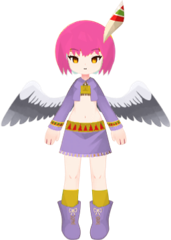
みあみあミーア ・ Lv.15すばやさ型3枠
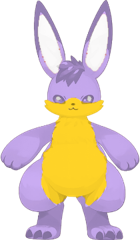
ハムっちハム ・ Lv.12ライフ型3枠
💗好きメロディー→ ユグドラシル種も少し
💦苦手モノリス
派手なカードで盛り上げる。
好きなカード: メタルナー(MFバトルカードのカード) ・ よく入れるカード: 冷静な判断・がんじがらめ
あとで: メタルナー(実装されたらマスモンの4体目に)
🐾 マスモン(育成・染色)
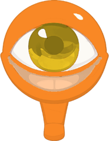
メダマ焼きスエゾー ・ Lv.18ライフ型3枠
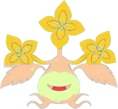
おぼろんオボロゲソウ ・ Lv.14防御型3枠
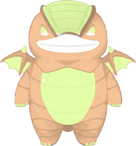
みたらしくんミタラシ ・ Lv.13ライフ型3枠
💗好きスエゾー
💦苦手ライガー
あわてず守って、
好きなカード: グジラ(MFバトルカードのカード) ・ よく入れるカード: 興奮のるつぼ・必殺技の封印
あとで: グジラ(実装されたらマスモンの4体目に)
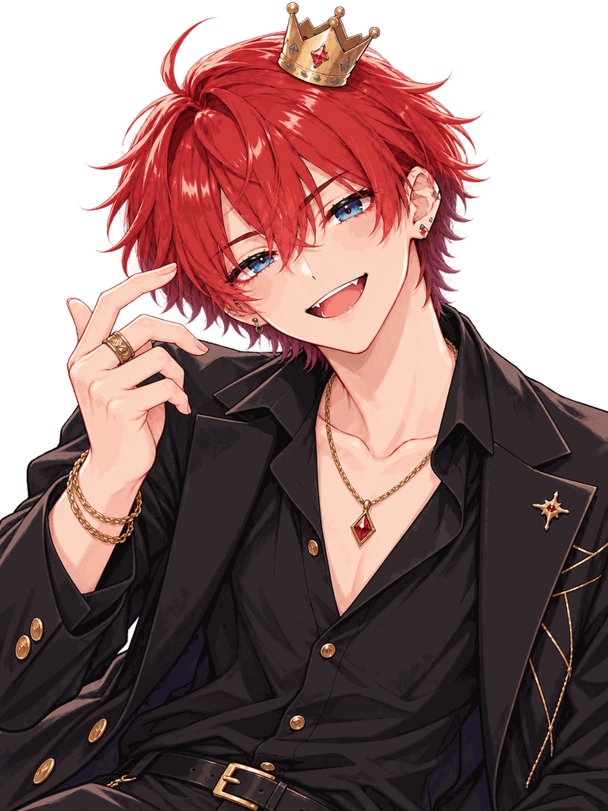
あつ🐾 マスモン(育成・染色)
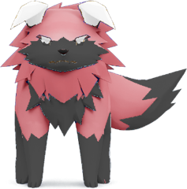
ライライガー ・ Lv.27攻撃型3枠
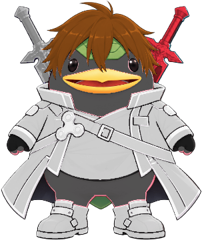
師匠剣士モッチー ・ Lv.19攻撃型5枠
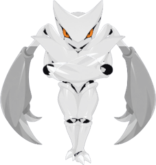
ザンくんザン ・ Lv.16すばやさ型3枠
💗好きライガー
💦苦手オボロゲソウ→ プラント種も少し
強いモンスターで正面から。
好きなカード: ドラゴン(MFバトルカードのカード) ・ よく入れるカード: 竜巻アタック・地震・炎のカベ・ブリザード
あとで: ドラゴン(実装されたらマスモンの4体目に)
🐾 マスモン(育成・染色)
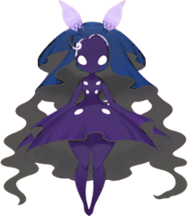
ともしびイルミネ ・ Lv.21ガッツ型5枠
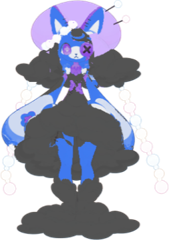
ゆめのドリーミィ ・ Lv.15ガッツ型5枠
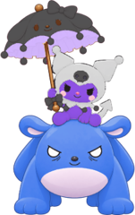
よるクロミー ・ Lv.14防御型5枠
💗好きイルミネ
💦苦手ライガー
相手の手を読んで、
好きなカード: ニャー(MFバトルカードのカード) ・ よく入れるカード: 必殺技の応酬
あとで: ニャー(実装されたらマスモンの4体目に)
🐾 マスモン(育成・染色)
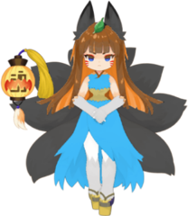
コン太キュービ ・ Lv.25すばやさ型5枠
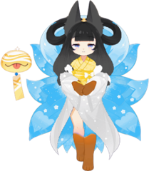
ヒメオリヒメ ・ Lv.18ガッツ型5枠
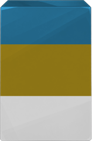
ソロバンモノリス ・ Lv.15防御型3枠
💗好きキュービ
💦苦手ゴースト
記録から勝ち筋を決めて、
好きなカード: ハム(大声)(MFバトルカードのカード) ・ よく入れるカード: 大混乱・時間稼ぎ・大声・ハテナマーク
🐾 マスモン(育成・染色)
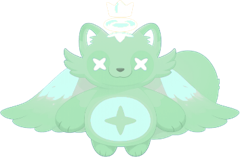
ノアアーク ・ Lv.23防御型3枠
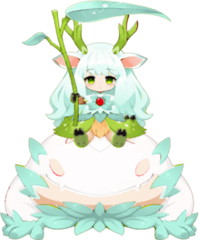
こかげユグドラシル ・ Lv.17ライフ型3枠
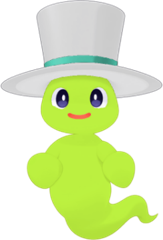
ふわりゴースト ・ Lv.14ガッツ型3枠
💗好きアーク
💦苦手ザン
仲間を守るカードを多めに。
好きなカード: デュラハン(MFバトルカードのカード) ・ よく入れるカード: 剣技・精神・守りの3つの組み方
あとで: デュラハン(実装されたらマスモンの4体目に)